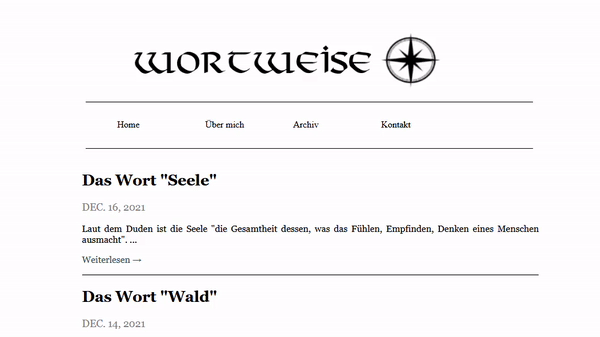
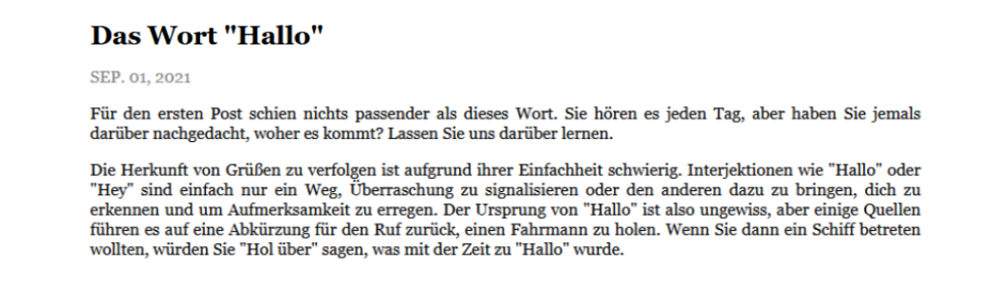

I've been interested in etymology ever since I was a kid. One of my earliest memories is reading a weekly column on the local newspaper, which would tell of the origins of words and popular expressions in Portuguese. My mother is also a Language major, so the topic has always been a source of much amusement at the house.
When I started learning German I had a goal of writing a text each day, a journey that has been documented here. Since this approach was so effective, I didn't want to stop even after completing 365 days of continuously writing at Langcorrect. I started learning a bit of Django each day with the sole goal of building the blog. Luckily a lot of tutorials are available online and so most of my headaches were with particular stuff I wanted to implement.
One problem in the beginning was rendering images. Although it is possible to have images directly on the static files folder, this is certainly not ideal if you want more control on where to place each image etc. I was certain there had to be a way around this and searching online eventually led me to django-inline-media. This is a really nice project by Daniela Rus which gives the user a lot more control when handling images and static files. But here's the catch, there's a much easier way to do this. If one chooses to host images somewhere else and simply use the common html tag for images within the post, the command won't render it initially but it does after including the safe filter, as in { txt | safe}. This truly baffled me, curiously enough it seems like no one talks about this functionality for placing images on posts.
Responsive design was also a major headache. Even now I feel like the site is not perfectly well built in the mobile version. At least it's functional and readable, so that's gotta be a plus. You can compare the layouts for yourself:


When everything was ready, I deployed it with Heroku and enabled the simplest Dyno in order to ensure SSL certification was in place. There was then some consideration about moving the database to AWS, but I found it worked fine with PostGre provided by Heroku, and so with all migrations in place the site was lauched on Sept. 1st of 2021. You can read all the posts here.
